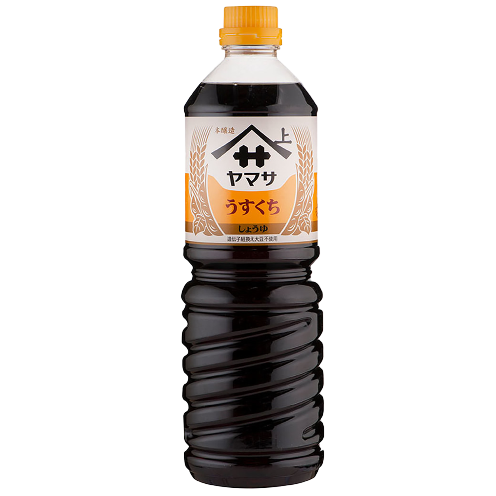
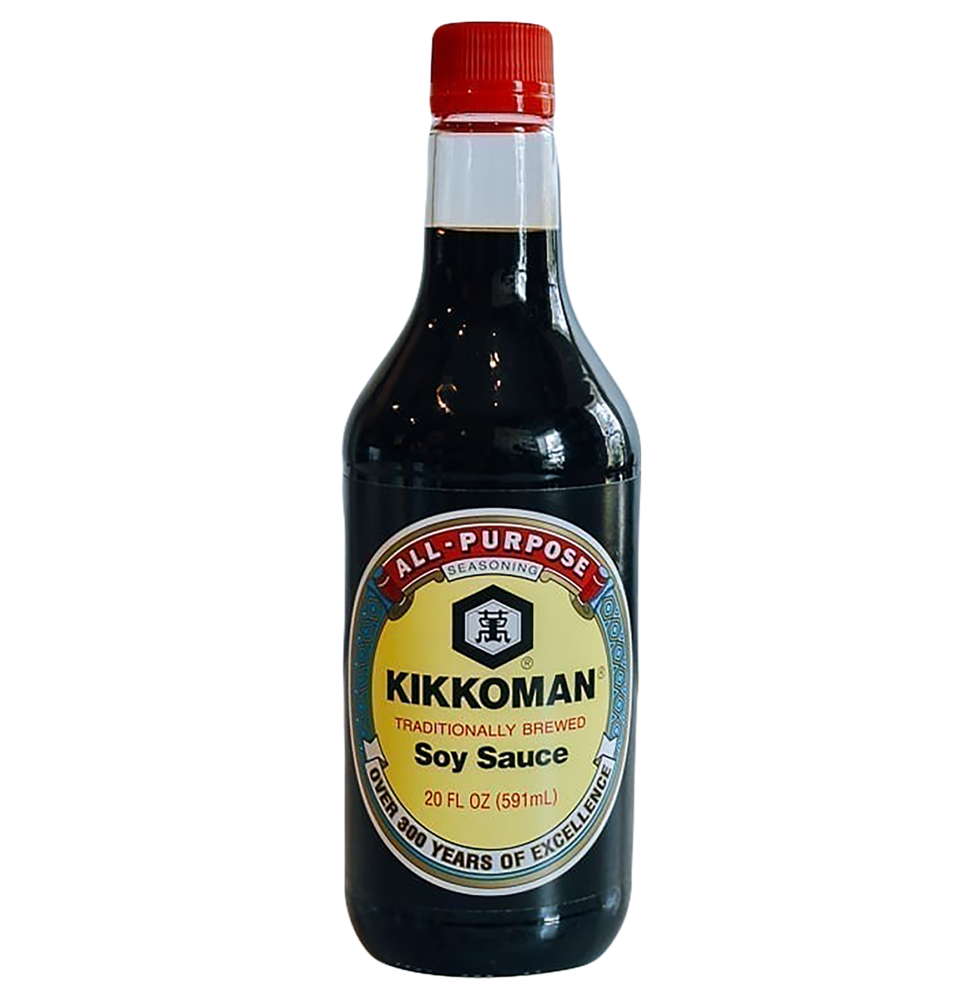
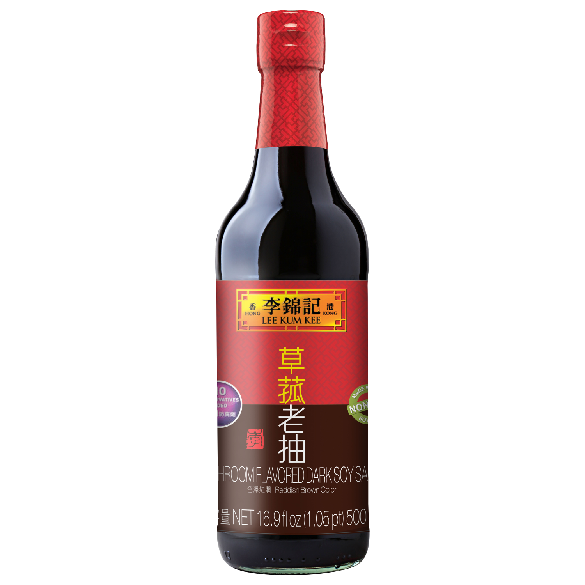

light soy sauce
Good for cooking and seasoning, particularly in light-colored dishes such as soups and braises. Unlike the name, it's actually more salty than normal soy sauce.

soy sauce
General purpose seasoning for cooked and raw applications.

dark soy sauce
Thicker and sweeeter than normal soy sauce. Typically for cooking and marinades. It's often used to give dishes a darker color (ie. Char kway teow.)